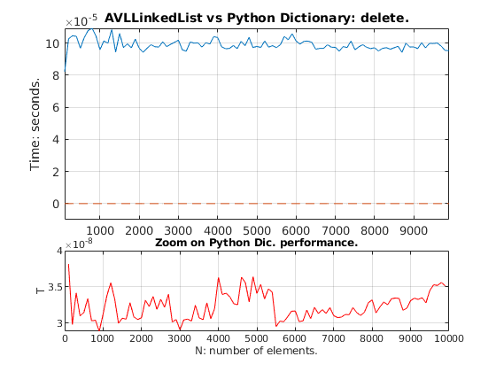

AVL1Path = fullfile('Performance','performanceAvl1.txt');
AVL2Path = fullfile('Performance','performanceAvl2.txt');
Dic1Path = fullfile('Performance','performanceDic1.txt');
Dic2Path = fullfile('Performance','performanceDic2.txt');
plotLimits1 = [-Inf Inf -0.00001 Inf];
plotLimits2 = [-Inf Inf -0.00001 Inf];
figure
subplot(3,2,[1,4]);
AVL1ID = fopen(AVL1Path);
Dic1ID = fopen(Dic1Path);
AVL1Scan = textscan(AVL1ID,'%u %f');
Dic1Scan = textscan(Dic1ID, '%u %f');
fclose(AVL1ID);
fclose(Dic1ID);
plot(AVL1Scan{1},AVL1Scan{2},Dic1Scan{1},Dic1Scan{2},'--')
title('AVLLinkedList vs Python Dictionary: delete.');
ylabel('Time: seconds.');
axis(plotLimits1);
grid on;
subplot(3,2,[5,6])
plot(Dic1Scan{1},Dic1Scan{2},'r');
xlabel('N: number of elements.');
ylabel('T');
grid on;
title('Zoom on Python Dic. performance.');
figure
subplot(3,2,[1,4]);
AVL2ID = fopen(AVL2Path);
Dic2ID = fopen(Dic2Path);
AVL2Scan = textscan(AVL2ID,'%u %f');
Dic2Scan = textscan(Dic2ID, '%u %f');
fclose(AVL2ID);
fclose(Dic2ID);
plot(AVL2Scan{1},AVL2Scan{2},Dic2Scan{1},Dic2Scan{2},'--')
title('AVLLinkedList vs Python Dictionary: find.');
ylabel('Time: seconds.');
axis(plotLimits2);
grid on;
subplot(3,2,[5,6]);
plot(Dic2Scan{1},Dic2Scan{2},'r');
xlabel('N: number of elements.');
ylabel('T');
grid on;
title('Zoom on Python Dic. performance.')
